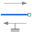

PrismaticPrismatic joint (1 translational degree-of-freedom, 2 potential states, optional axis flange) |
Diagram
{kind=link}
Information
This information is part of the Modelica Standard Library maintained by the Modelica Association.
Joint where frame_b is translated along axis n which is fixed in frame_a. The two frames coincide when the relative distance "s = 0".
Optionally, two additional 1-dimensional mechanical flanges (flange "axis" represents the driving flange and flange "support" represents the bearing) can be enabled via parameter useAxisFlange. The enabled axis flange can be driven with elements of the Modelica.Mechanics.Translational library.
In the "Advanced" menu it can be defined via parameter stateSelect that the relative distance "s" and its derivative shall be definitely used as states by setting stateSelect=StateSelect.always. Default is StateSelect.prefer to use the relative distance and its derivative as preferred states. The states are usually selected automatically. In certain situations, especially when closed kinematic loops are present, it might be slightly more efficient, when using the StateSelect.always setting.
In the following figure the animation of a prismatic joint is shown. The light blue coordinate system is frame_a and the dark blue coordinate system is frame_b of the joint. The black arrow is parameter vector "n" defining the translation axis (here: n = {1,1,0}).
Parameters (8)
| useAxisFlange |
Value: false Type: Boolean Description: = true, if axis flange is enabled |
|---|---|
| animation |
Value: true Type: Boolean Description: = true, if animation shall be enabled |
| n |
Value: {1, 0, 0} Type: Axis Description: Axis of translation resolved in frame_a (= same as in frame_b) |
| boxWidthDirection |
Value: {0, 1, 0} Type: Axis Description: Vector in width direction of box, resolved in frame_a |
| boxWidth |
Value: world.defaultJointWidth Type: Distance (m) Description: Width of prismatic joint box |
| boxHeight |
Value: boxWidth Type: Distance (m) Description: Height of prismatic joint box |
| stateSelect |
Value: StateSelect.prefer Type: StateSelect Description: Priority to use distance s and v=der(s) as states |
| e |
Value: Modelica.Math.Vectors.normalizeWithAssert(n) Type: Real[3] Description: Unit vector in direction of prismatic axis n |
Inputs (2)
| boxColor |
Default Value: Modelica.Mechanics.MultiBody.Types.Defaults.JointColor Type: Color Description: Color of prismatic joint box |
|---|---|
| specularCoefficient |
Default Value: world.defaultSpecularCoefficient Type: SpecularCoefficient Description: Reflection of ambient light (= 0: light is completely absorbed) |
Connectors (4)
| frame_a |
Type: Frame_a Description: Coordinate system fixed to the joint with one cut-force and cut-torque |
|
|---|---|---|
| frame_b |
Type: Frame_b Description: Coordinate system fixed to the joint with one cut-force and cut-torque |
|
| axis |
Type: Flange_a Description: 1-dim. translational flange that drives the joint |
|
| support |
Type: Flange_b Description: 1-dim. translational flange of the drive support (assumed to be fixed in the world frame, NOT in the joint) |
Components (5)
| world |
Type: World |
|
|---|---|---|
| box |
Type: Shape |
|
| fixed |
Type: Fixed |
|
| internalAxis |
Type: InternalSupport |
|
|  | constantForce |
Type: ConstantForce |
Used in Examples (9)
|
Modelica.Mechanics.MultiBody.Examples.Elementary
Simple spring/damper/mass system |
|
|
Modelica.Mechanics.MultiBody.Examples.Elementary
Simple spring/damper/mass system |
|
|
Modelica.Mechanics.MultiBody.Examples.Elementary
Mass attached with a spring to the world frame |
|
|
Modelica.Mechanics.MultiBody.Examples.Elementary
Demonstrate the visualization of a sine surface, as well as a torus and a wheel constructed from a surface |
|
|
Modelica.Mechanics.MultiBody.Examples.Loops
Model of one cylinder engine |
|
|
Modelica.Mechanics.MultiBody.Examples.Loops
Model of one cylinder engine with gas force and preparation for assembly joint JointRRP |
|
|
Modelica.Mechanics.MultiBody.Examples.Loops
One kinematic loop with four bars (with only revolute joints; 5 non-linear equations) |
|
|
Modelica.Mechanics.MultiBody.Examples.Loops
One kinematic loop with four bars (with UniversalSpherical joint; 1 non-linear equation) |
|
|
Modelica.Mechanics.MultiBody.Examples.Constraints
Body attached by one spring and two prismatic joints or constrained to environment |
Used in Components (4)
|
Modelica.Mechanics.MultiBody.Examples.Loops.Utilities
Cylinder with rod and crank of a combustion engine |
|
|
Modelica.Mechanics.MultiBody.Joints
Cylindrical joint (2 degrees-of-freedom, 4 potential states) |
|
|
Modelica.Mechanics.MultiBody.Joints
Planar joint (3 degrees-of-freedom, 6 potential states) |
|
|
Modelica.Mechanics.MultiBody.Joints
Joint (no mass, no inertia) that describes an ideal rolling wheel set (two ideal rolling wheels connected together by an axis) |